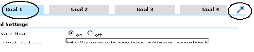

Configuración de los objetivos de conversión
- Por "objetivo" entendemos una página de un sitio web a la que un usuario accede cuando ha realizado una adquisición o ha completado otra acción deseada como, por ejemplo, un registro o una descarga. Antes de que Urchin pueda calcular las cifras de conversión obtenidas, defina uno o más objetivos. Para establecer un objetivo, tenga en cuenta la información siguiente:
- La URL de la página del objetivo
- Especifique una página a la que únicamente se puede acceder tras la consecución de un objetivo. En el supuesto de que se trate de un objetivo de registro, por citar un ejemplo, la página objetivo será la página Gracias. Si se puede acceder a su página objetivo sin necesidad de completar el proceso que lleva al objetivo, sus porcentajes de conversión aumentarán de forma errónea.
- Un nombre para el objetivo
- Especifique un nombre que le sea fácil de reconocer cuando vea los informes. Por ejemplo, "suscripción lista distribución" o "descarga del artículo ABC".
- Redireccionamiento definido
- Para la definición de un redireccionamiento, puede especificar hasta diez páginas. Estas páginas representan la ruta que espera que tomen sus usuarios para alcanzar el objetivo. Si define esas páginas, verá con qué frecuencia los usuarios abandonan los objetivos y a dónde se dirigen. Para un objetivo de e-commerce, esas páginas pueden corresponder a la página de Checkout, la de información acerca de la dirección de envío o la de información sobre la tarjeta de crédito.
- Un valor para el objetivo, si este no es una transacción de e-commerce
En el caso de los objetivos de e-commerce, deje el campo "Valor del objetivo" en blanco, como se describe a continuación, y configure la página del recibo de compra tal como se describe en ¿Cómo se realiza el seguimiento de las transacciones de e-commerce?.
- En el caso de los objetivos que no son de non-e-commerce , Urchin utiliza su valor de objetivo asignado para calcular el retorno de la inversión, la puntuación media y demás parámetros. Un buen método para valorar un objetivo consiste en evaluar la frecuencia con la que los usuarios que alcanzan este objetivo se convierten en clientes. Por ejemplo, si su equipo de ventas logra cerrar ventas con un 10% de personas que solicitan que se contacte con ellas, y su transacción media es de 500 €, puede asignar 50 €, es decir, el 10% de 500 €, a su objetivo "Contácteme". Por el contrario, si solo el 1% de las suscripciones de la lista de distribución se traduce en una venta, le recomendamos que sólo asigne 5 € a su objetivo "suscripción lista distribución".
Para configurar los objetivos:
Acceda a su cuenta de Urchin 6 y haga clic en Configuración, en la parte superior derecha de la pantalla.

- Haga clic en Perfiles de Urchin y, a continuación, en Perfiles.

Para editar el perfil de su sitio web, haga clic en el botón Editar.

Haga clic en la pestaña Objetivos.

- Edite un objetivo haciendo clic en una de las cuatro pestañas de objetivos situadas en la parte superior de la pantalla. A continuación, haga clic en la varita mágica situada en la parte superior derecha para activar el Asistente de configuración de objetivos.

- En el asistente, seleccione un paso u "Objetivo" en las pestañas que aparecen en la parte superior de la pantalla. Utilice el navegador web del asistente para ir a la página que desea establecer como paso de redireccionamiento u objetivo. Para seleccionar la página como el paso 1, haga clic en "Añadir esta página como paso núm.: 1". Repita esta acción para cada paso de redireccionamiento. Haga clic en Configurar esta página como objetivo de conversión para establecerla como objetivo. A continuación, cierre el asistente.
Cuando haya cerrado el asistente, aparecerán las paginas que ha seleccionado en los campos "Pasos" y "Direcciones web de objetivos", tal y como se muestra a continuación. También puede acceder y editar las URL directamente en la pantalla "Objetivos".

Para definir un objetivo de E-commerce, configure su página de recibos como objetivo y deje en blanco el campo "Valor del objetivo (moneda)".